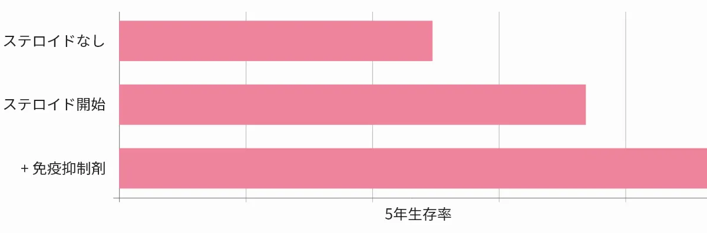

自己免疫疾患とは？
日本の自己免疫疾患の患者数は、全身性自己免疫疾患とクローン病などの臓器特異的自己免疫疾患を合わせると約850万人と推定されています。[1]
自己免疫疾患の中には、原因がはっきりわからないまま発症するものも少なくありません[2]。
自己免疫疾患の中には、原因がわからないまま発症し、自然と治癒するものもありますが、ほとんどは慢性的な病気で、生涯にわたって薬で症状をコントロールする必要があります。[3]
どんな人が自己免疫疾患を発症するのか？
これまで長くの間、自己免疫疾患の原因は不明とされてきましたが、近年の研究でその原因が『エプスタイン・バール・ウィルス（EBV,EBウィルス）』の感染によるものであるということが明らかになりました。[4]
このEBウィルスは、日本人では成人までに90〜100%の人が感染します。[5]
そして、終生に渡って持続感染し排除されません。[6]
疾患ごとに発症する年代や男女差などがあるようですが、すべての人が発症リスクを持つ疾患であることを意識する必要があります。
自己免疫疾患の治療法
近年、自己免疫疾患の治療法は大きく改善され、ステロイド薬だけでなく、免疫抑制剤など体内の過剰な免疫反応や炎症反応を抑える医薬品が開発されました。[7]
しかし、必要な免疫までも抑制してしまい、ウィルス等に感染しやすくなったり、がんを誘発してしまう可能性も高く、腎障害や高血圧、心不全や神経疾患、関節性肺炎、肝障害、糖尿病などの重篤な副作用もあり、副作用が起きないように調整することが重要です。[8]
また、これらの薬で症状を抑えることを目指していきますが、発症するとほとんどが治癒することがない慢性的な疾患ですので、身体的、心理的両面での負担が大変大きな病気です。
特に関節リウマチは患者数も多く、様々な薬が存在します。
関節リウマチの主な治療薬
| 薬剤 | 主な商品名 | 作用 | 推奨度 | 注意すべき副作用 |
|---|---|---|---|---|
| 免疫調整薬 | ||||
| 全チオリンゴ酸 ナトリウム |
シオゾール | 中 | B | 皮疹、蛋白尿 |
| オーランフィン | リドーラ | 弱 | B | 下痢、軟便 |
| D・ペニシラミン | メタルカブターゼ | 中 | B | 皮疹、蛋白尿、肝障害、血小板減少 自己免疫疾患の誘発 |
| サラゾスル ファピリジン |
アザルフィジンEN | 中 | A | 皮疹 |
| ブシラミン | リマチル | 中 | A | 皮疹、蛋白尿 |
| ロベンザリット | カルフェニール | 弱 | – | 腎機能障害 |
| アクタリット | オークル、モーバー | 弱 | B | 皮疹 |
| イグラモチド | ケアラム、コルベット | 中 | – | 肝障害 |
| 免疫抑制薬 | ||||
| メトトレキサート | リウマトレックス | 強 | A | 間質性肺炎、骨髄障害、肝障害 |
| ミゾリビン | プレディニン | 弱 | B | 高尿酸血症 |
| レフルノミド | アラバ | 強 | A | 肝障害、骨髄障害、下痢、感染症、 間質性肺炎 |
| タクロリムス | プログラフ | 中 | – | 腎障害、高血圧、耐糖能異常 |
| シグナル伝達を抑える | ||||
| ゼルヤンツ | トファシチニブ | 強 | – | 感染症、带状疱疹、肝機能障害、貧血 |
| オルミエント | バリシチニブ | 強 | – | 感染症、带状疱疹、肝機能障害、貧血 |
薬を使わずに治療をすることはできるか？
現在、東洋医学をはじめとした代替医療で薬を使わずに治癒を目指す方も多くなりました。
薬による副作用を恐れるがあまりに、病院にも受診せず自己判断で行動される事例もあるかと思いますが、自己免疫疾患に関しては、診断や投薬が遅れることで、寿命を短くしてしまうケースもあるため注意が必要です。
若い女性が発症することの多い、膠原病、全身性エリテマトーデスは、以前は5年生存率が50%という恐ろしい病気でしたが、ステロイド薬や免疫抑制剤の登場によって現在では5年生存率が90%以上にまで改善されています。[9]
全身性エリテマトーデスの生命予後※

また、関節リウマチは、発症から2年以内に最も急速に症状が進行するため、早期治療が重要です。[10]
初期にできる限り早く受診し、投薬することで、関節破壊を抑制し、関節の機能を維持することを目指します。
残念ながら、自己免疫疾患は薬の助けを借りて、症状を緩和し、健康や機能を維持する必要がある病気です。薬を使わずに治療することは大変難しい上に、初期の治療への取り組みによって、その後の人生が大きく影響されることを考えると、薬を使わずに治療できるものではないということを広く周知する必要があります。
生命予後は治療法の進歩とともに大きく改善されてきています
※生命予後: あと何年生きられるか
自己免疫疾患に対するウォートンジェリー幹細胞治療の可能性
世界的に、関節リウマチをはじめとする様々な自己免疫疾患に対して幹細胞治療の臨床試験が数多く行われています。中でも、臍帯由来のウォートンジェリー幹細胞（WJ-MSC）は突出した免疫調整作用および抗炎症作用を有することから注目されており[11]、WJ-MSCから得られる培養上清（セクレトーム）にも同様の免疫調整効果が認められています。[12]
関節リウマチにおけるウォートンジェリー幹細胞治療の可能性
ウォートンゼリー幹細胞は、関節リウマチ（RA） やその他の関節炎の潜在的な治療薬です。
- 抗炎症:ウォートンジェリー幹細胞には抗炎症作用があり、関節リウマチ患者の炎症を軽減できることが示されています。[13]
- 免疫調節:ウォートンジェリー幹細胞は免疫寛容を回復させ、自己免疫による組織破壊を抑える働きが期待されます。[14]。
これにより将来的には免疫抑制剤の服用を中止できる状態（治癒や長期寛解）を目指せる可能性があります。 - 軟骨再生:ウォートンジェリー幹細胞には軟骨細胞への分化能があり、損傷した軟骨を修復・再生する作用が認められています。[15]
将来的に医薬品として実用化されることを目指していますが、現段階では自費治療としてマレーシアでのウォートンジェリー幹細胞およびセクレトーム治療が可能です。
全身性自己免疫疾患の患者数は約105万人、臓器特異的自己免疫疾患の患者数は約745万人で、自己免疫疾患の患者総数（推計）は850万人程度に達する。日本の人口の約7%が何らかの自己免疫疾患に罹患しているものと推定される。
自己免疫疾患の原因は不明です。
現在の治療法では多くの自己免疫疾患で長期寛解の維持は難しく、症状緩和やQOL改善を目的とした対症療法が中心となっている。
「進行性で原因不明」とされてきた多発性硬化症について、エプスタイン–バールウイルス（EBV）が発症の引き金になっていることを示す有力な証拠が報告された。
EBVは5歳未満の小児の約50%が感染し、成人の90%以上がEBV抗体陽性（既感染）となる。
初感染後、EBウイルスは宿主内のBリンパ球に終生潜伏感染し、体内から排除されない。
関節リウマチの治療はこの10年で大きく進歩し、従来の抗リウマチ薬に加えて、生物学的製剤やJAK阻害薬などの新規治療薬が登場して有効性が向上している。
出典: Clinical application of mesenchymal stem cells in rheumatic diseases
免疫抑制薬を長期間服用する。しかし、これらの薬は自己免疫反応を抑えるだけでなく、感染症の原因となる微生物やがん細胞から体を守る能力も抑制してしまうため、結果として一部の感染症やがんの発症リスクを高める。
SLEの5年生存率は、20年前には50%程度であったが、現在では90%以上に改善している。
関節破壊は発症2年以内に急速に進行することが分かっており、早期診断・早期治療によって速やかに寛解へ導くことが重要と考えられている。
ウォートンジェリー由来の間葉系幹細胞（WJ-MSC）は、高い柔軟性と幹細胞含有量を持ち、強い抗炎症特性を示すとともに宿主の免疫寛容性を改善する能力を有する。
WJ-MSCの免疫調整効果は、細胞そのものによる細胞間接触だけでなく、分泌されるサイトカインやエクソソーム（セクレトーム）によっても発揮される。
出典: Human WJ-MSCs Primed with TNF-α/IFN-γ Modulate Immune Cells (Frontiers in Immunology)
プールした複数由来のWJ-MSCを関節炎モデルマウスに投与したところ、優れた免疫抑制作用により関節リウマチの疾患重症度が低下した。
出典: Characteristics of Pooled WJ-MSCs and their Potential Role in Rheumatoid Arthritis Treatment
WJ-MSCを用いた研究で、成熟樹状細胞や活性化T細胞に対する作用として、FOXP3やIL-10、TGF-β1の有意な発現上昇（制御性T細胞の誘導）が認められ、免疫寛容メカニズムに関与する重要な遺伝子群（IDO1やPTGES2など）も増加した。
出典: Human WJ-MSCs Primed with TNF-α/IFN-γ Modulate Immune Cells (Frontiers in Immunology)
MSCは骨や軟骨、心筋、脂肪など中胚葉系由来の複数の細胞種に分化でき、また種々の栄養因子を分泌して組織修復や再生を促進する。このため、RAのような骨・関節疾患の治療にも有望な候補となる。
出典: Management of Rheumatoid Arthritis: Possibilities and Challenges of MSC-Based Therapies